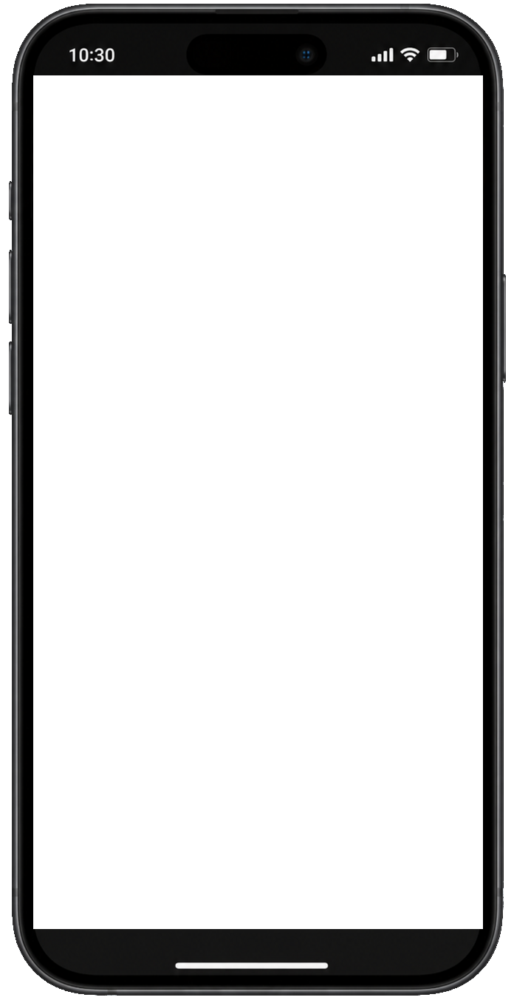

Uma comunidade construída ao longo dos anos
Conteúdos, mensagens e atendimentos acompanhados por milhares de pessoas.



Uma comunidade que acompanha o Tarot Kármico através do YouTube.
Quero mais leituras